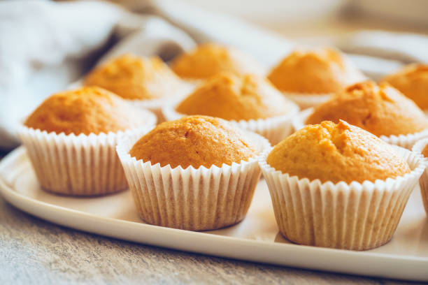

Вкусные и простые кексы

Ингредиенты
- изюм или курага по вкусу.
- пачка масла. (растопленное но не горячее)
- 2 яйца.
- щепотка соли.
- стакан сахара.
- 250 мл сметаны. (20%)
- ч.л. ванильного сахара.
- 200 гр муки.
- 1/2 ч.л. пищевой соды.
Последовательность готовки
- Разогреть духовку на 200 градусов.
- Размешать яйца.
- Добавить щепотку соли.
- Хорошенько размешать.
- Добавить стакан сахара.
- Хорошенько перемешать.
- Добавить сметану.
- Хорошенько перемешать.
- Добавить ч.л. ванильного сахара.
- Добавить просеянную муку.
- Хорошенько перемешать.
- Добавить пищевую соду.
- Разрезать курагу и изюм на небольшие кубики.
- Изюм и курагу пересыпать мукой.
- Разделить по двенадцати формам.
- Заложить в духовку на 30 минут.
Приятного аппетита!
Оригинальное видео